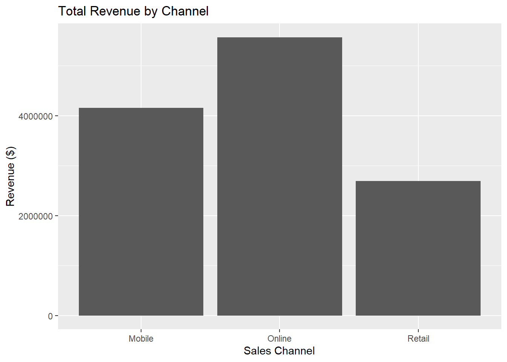
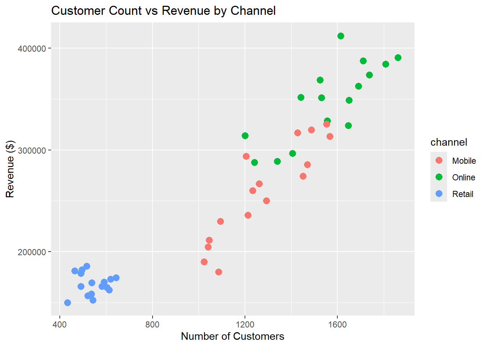

str(business_data)## 'data.frame': 48 obs. of 7 variables:
## $ quarter : chr "Q1" "Q2" "Q3" "Q4" ...
## $ channel : chr "Online" "Online" "Online" "Online" ...
## $ year : int 2023 2023 2023 2023 2023 2023 2023 2023 2023 2023 ...
## $ revenue : int 314019 288825 296739 287699 351721 324090 348699 328609 368558 362724 ...
## $ customers : int 1200 1340 1405 1241 1441 1647 1650 1556 1524 1690 ...
## $ conversion_rate: num 3.9 3.4 2.9 3.6 NA 3.8 3.4 3.7 4.3 3.6 ...
## $ region : chr "North" "South" "East" "West" ...summary(business_data)## quarter channel year revenue
## Length:48 Length:48 Min. :2023 Min. :150231
## Class :character Class :character 1st Qu.:2023 1st Qu.:177597
## Mode :character Mode :character Median :2024 Median :263544
## Mean :2024 Mean :258796
## 3rd Qu.:2024 3rd Qu.:324372
## Max. :2024 Max. :412125
##
## customers conversion_rate region
## Min. : 433 Min. :2.300 Length:48
## 1st Qu.: 600 1st Qu.:3.100 Class :character
## Median :1223 Median :3.700 Mode :character
## Mean :1127 Mean :3.849
## 3rd Qu.:1526 3rd Qu.:4.400
## Max. :1861 Max. :6.400
## NA's :3unique(business_data$channel)## [1] "Online" "Mobile" "Retail"Quarter
The data called quarter is either:
This demonstrates that quarter is numerical data referring to a specific quarter of the year.
Channel
The data called “channel” is referring to the source of different revenue streams, which include the following:
Revenue
The range of revenue values goes from a minimum of $150,230 to a maximum of $412,125.
channel_totals <- aggregate(revenue ~ channel, data = business_data, FUN = sum)
channel_totals## channel revenue
## 1 Mobile 4158056
## 2 Online 5571130
## 3 Retail 2693023aggregate(customers ~ quarter, data = business_data, FUN = mean)## quarter customers
## 1 Q1 1069.000
## 2 Q2 1153.583
## 3 Q3 1172.917
## 4 Q4 1110.750Total Revenue
The online channel generates the most revenue overall.
Customers In Quarters
Quarter 3 (Q3) has the most customers.
business_data$revenue_per_customer <- business_data$revenue / business_data$customers
aggregate(revenue_per_customer ~ channel,
data = business_data,
FUN = mean)## channel revenue_per_customer
## 1 Mobile 202.8074
## 2 Online 224.3320
## 3 Retail 314.2239Highest Average Revenue Per Customer
The retail location has the highest average revenue per customer. This tells us that the retail locations have a sales advantage that could be due to many different reasons such as better upselling, better marketing or different consumer behavior psychology of in-person shopping.
# Turned Off Scientific Notation For Ease Of Understanding
options(scipen = 999)
channel_totals <- aggregate(revenue ~ channel, data = business_data, sum)
ggplot(channel_totals, aes(x = channel, y = revenue)) +
geom_bar(stat = "identity") +
labs(title = "Total Revenue by Channel",
x = "Sales Channel", y = "Revenue ($)")
Investnment Allocation
The channel with the highest total revenue is online followed by mobile than retail. Therefore, based off this data visualization the online channel should receive more investment because it already demonstrates the highest profitability.
ggplot(business_data, aes(x = customers, y = revenue, color = channel)) +
geom_point(size = 3) +
labs(title = "Customer Count vs Revenue by Channel",
x = "Number of Customers", y = "Revenue ($)")
Conversion Of Customers to revenue
The scatter plot shows that although mobile and online channels make the most profit they also have significantly more customer reach then the physical retail channel. This demonstrates that the most efficient channel to convert customers to revenue is retail because it has a very small reach but still demonstrate high relative profits.
# I was having issues with CBIND so i used mergers instead.
library(knitr)
avg_customers <- aggregate(customers ~ channel, data = business_data, FUN = mean)
avg_conversion <- aggregate(conversion_rate ~ channel, data = business_data, FUN = mean)
# Merging data.
performance_summary <- merge(channel_totals, avg_customers, by = "channel")
# Merging avg_conversion into preformance summary beacause merging can only be done two at a time.
performance_summary <- merge(performance_summary, avg_conversion, by = "channel")
# Digits @ 2 is specfically important for "avg conversion rate".
kable(
performance_summary,
digits = 2,
caption = "Channel Performance Summary",
col.names = c("Channel", "Total Revenue ($)", "Average Customers", "Average Conversion Rate (%)")
)| Channel | Total Revenue ($) | Average Customers | Average Conversion Rate (%) |
|---|---|---|---|
| Mobile | 4158056 | 1278.06 | 2.88 |
| Online | 5571130 | 1559.56 | 3.64 |
| Retail | 2693023 | 542.06 | 5.03 |
Strategic Reconmmendation
In Section 2.2 and Section 1.3 it is demonstrated that the retail channel convertes customers to revenue most efficiently. The data in Section 1.3 demonstrates the following:
Revenue Per Customer
In other words, the retail channel demonstrates the highest profit per customer. Therefore Increased in-store promotions should be created to help drive more traffic and take advantage of retail stores high conversion rate of 5.03%.